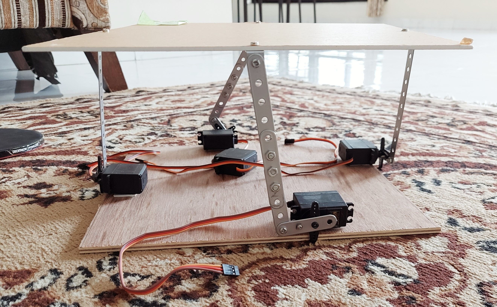

This project was focused on understanding the control systems applications. It basically uses Computer Vision for locating the ball on the platform and then using the feedback mechanism, i.e, PID Controller in our case, automatically generates the tilt of the surface for balancing the ball on the platform. The servo motors are initially at an angle of 90 degrees and they turn by the angles that is given as an output of the PID Controller. All this is integrated on the Arduino UNO Microcontroller. All the communication between Arduino and the Python Code for OpenCV and controller is handled by Pyserial library.

In many ways, the project exceeded our expectations by being able to tilt the platform fast enough to balance the ball on it. Later on, we found out that the 4 servo motors were a very high load for Arduino.If this project were to be redone, there would be a few things not done the same way as with most first-time projects; but overall, the project was considered to be a success.
Interested people can have a look at the complete documentation of the project here